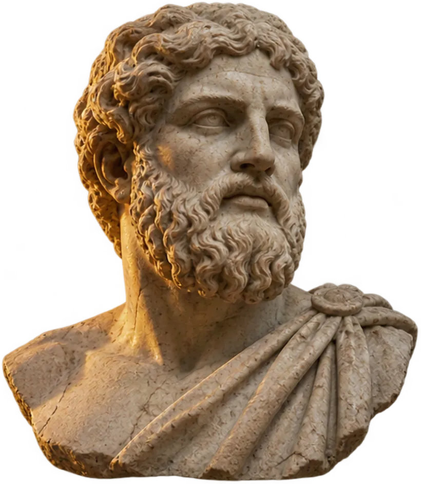

Konten portofolio tidak termuat. Periksa file
js/data.js: kemungkinan ada tanda kutip atau koma yang hilang.
Χαίρετε · salam kenal, saya
Alvis Syahril

Α · Tentang
Pembangun di balik kolom-kolom ini
Β · Keahlian
Empat pilar yang saya pegang

Γ · Karya
Yang sudah saya bangun
Gulir untuk menggeser galeri
Δ · Perjalanan
Odisei saya
Persinggahan yang membentuk cara saya bekerja.

Ε · Kontak